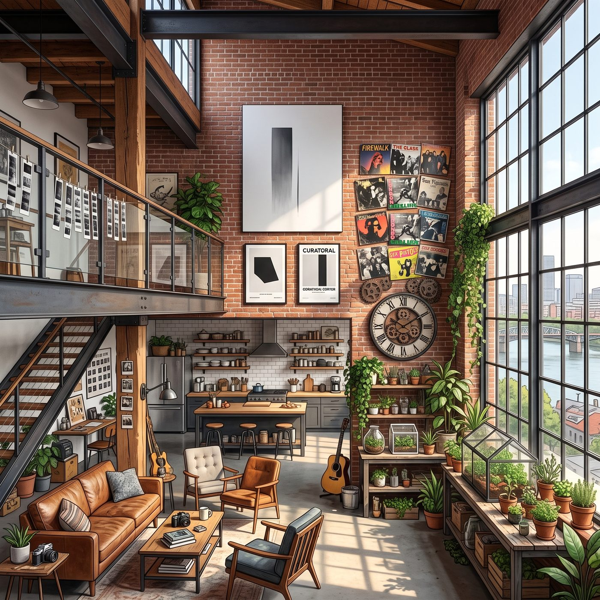

珍珠區的頂層Loft



這間位於波特蘭珍珠區老廠房改造的頂層 Loft，完美繼承了四個人互不相讓又奇妙融合的生活哲學。
挑高近五米的紅磚牆上，左側掛著 Victoria 從西雅圖私人拍賣會拍下來的巨幅極簡抽象畫與黑白策展海報，右側則被 Chloe 大喇喇地釘上了幾張磨邊的龐克樂隊黑膠封面，以及一個用廢舊雪佛蘭齒輪改裝而成的金屬掛鐘；挑高二層的走廊扶手上搭著 Max 剛洗好的黑白膠卷底片，而底層陽光最充足的落地窗邊，則擺滿了 Kate 細心照料的常春藤、多肉植物與小型草本溫室。
週六午後，波特蘭特有的綿密細雨剛停，陽光穿透未擦淨的水汽，在粗糙的實木地板上投下斑駁的光影。
「Price！我說過至少四百次了，」Victoria 穿著剪裁俐落的米白色絲綢襯衫與羊絨闊腿褲，手裡端著一杯手沖耶加雪菲，踩著室內拖鞋在開放式廚房的中島台前發出抗議，「妳那雙沾著全合成機油的工裝靴，要是再敢出現在我價值六千美元的北歐羊毛地毯邊緣五公分以內，我就會用家族信託基金把波特蘭社區學院的機械車間全買下來，然後改成芭蕾舞排練室！」
「得了吧，蔡斯策展人，」Chloe 從二樓小隔間的沙發上探出半個身子，身上穿著印著骷髏的寬大背心，嘴裡嚼著薄荷糖，手裡還拿著一把剛給吉他調音的六角扳手，「這叫後工業復古蒸汽龐克風，妳那些藝術學院的假正經教授求著要都看不懂。而且老娘今天剛在車庫幫一個開保時捷的倒霉蛋換了剎車片，賺的工時費剛好夠付天台花園這個月的有機肥料錢。」
樓梯轉角處，Kate 繫著圍裙，手裡端著一盤剛烤好的蔓越莓司康餅輕手輕腳地走下來，溫柔地打著圓場：「好了，Victoria，先嚐嚐這個？我減了三分之一的糖，加了妳喜歡的伯爵茶碎。Chloe，妳也快下來洗手，Max 剛從暗房出來呢。」
話音剛落，一樓盡頭由儲藏室改造而成的簡易暗房門簾被掀開，Max 揉著酸痛的脖子走出來。她鼻樑上架著黑框眼鏡，雙手還帶著淡淡的定影液酸味，但眼角卻帶著抑制不住的興奮，手裡小心翼翼地捏著幾張剛顯影乾燥的 8x10 黑白相紙。
「你們絕對猜不到我剛洗出來什麼，」Max 走到中島台前，把相紙輕輕鋪在隔熱墊上，「上週我們在天台上試圖把那台二手烤肉架點著時的抓拍——Victoria 拿著滅火器的表情簡直可以去競選年度先鋒表情包。」
「Maxine Caulfield！！」Victoria 瞥了一眼相紙，精緻的五官瞬間皺縮，連名媛儀態都差點沒端住，「立刻把底片銷毀！要是這張照片流進波特蘭當代藝術雙年展的初審名單裡，我就讓妳接下來一年只能用針孔照相機交作業！」
「這張歸我了，我要貼在天台門口當門神！」Chloe 像一陣風一樣從樓梯上滑了下來，順手抄起一塊司康餅塞進嘴裡，另一隻手搶走相紙，大笑著朝著通往屋頂天台的金屬旋轉梯狂奔而去。
「給我站住！妳這個野蠻人！」Victoria 一邊踩著拖鞋快步追上去，一邊對著身後的 Kate 和 Max 喊道，「Marsh！把門鎖上！考菲爾德，帶上妳的相機，今天我要親自監督妳拍一張符合我審美的正常肖像！」
通往天台的厚重鐵門被推開，微涼而清新的太平洋西北風瞬間灌了進來。
Chloe 一路衝到天台中央，被 Victoria 追得無路可逃，眼看就要被逼到欄杆邊，忽然靈機一動，停下腳步，指了指旁邊那張木條長椅。
「等等，蔡斯，」她故作正經地開口，「妳那張最愛坐的椅子，好像還沒擦乾淨——昨天下雨，鳥又剛好在上面拉了一坨。」
Victoria 瞬間止住腳步，警惕地看了眼那張椅子，又看了看步步逼近、一臉「別逼我」表情的 Chloe。
「妳休想轉移話題，」她冷笑一聲，「先把照片交出來。」
「不交，」Chloe 咧嘴一笑，仗著身高和臂力優勢，一個箭步欺身欺近，張開雙臂作勢就要把 Victoria 往那張「疑似還沒擦乾淨」的椅子上按去，「要不我幫妳先『免費試坐』一下，順便確認乾不乾淨？」
「妳敢！」Victoria 驚恐地瞪大眼睛，死死抵住 Chloe 的手臂，拚命後仰閃躲，「這是我今天剛換上的米白色絲綢襯衫！要是沾上一點鳥屎，我今天就得直接坐飛機回西雅圖洗衣！」
兩人拉扯了幾個回合，Victoria 眼看真的要被按到椅子上，終於敗下陣來，果斷鬆手投降。
「行了行了！」她氣急敗壞地後退兩步，整理著被拉皺的衣領，「這張照片先讓妳留著，但要是敢公開，我保證讓妳後悔。」
「這才乖嘛。」Chloe 得意地鬆開手，心滿意足地把那張相紙塞進工裝褲口袋，轉身晃悠著找了張確實乾淨的沙灘椅坐下。
Victoria 沒好氣地哼了一聲，掏出隨身的消毒濕巾，仔仔細細把那張長椅擦拭了一遍又一遍，確認萬無一失後，才終於放心地坐下，掏出平板電腦繼續處理公務。
天台上擺著四把漆成不同顏色的折疊帆布椅、一圈掛在欄杆上的太陽能小串燈，以及 Kate 細心打理的番茄藤與藍莓盆栽。遠處，波特蘭市區起伏的天際線與威拉米特河上的鐵橋在放晴的藍天下清晰可見，遠處的胡德雪山在雲霧後若隱若現。
Chloe 倒在最中間那把破舊但極其舒適的沙灘椅上，長腿架在護欄邊緣，迎著風舒服地瞇起眼睛；Victoria 坐在乾淨的木條長椅上，一邊優雅地用紙巾擦拭著桌子，一邊在平板電腦上審核著下週畫廊的佈展清單；Kate 蹲在花盆邊，正溫柔地給一株新發芽的薄荷澆水；而 Max 則安靜地靠在天台斑駁的磚牆邊，逆著午後純淨的日光，將鏡頭對準了這座屬於她們四人的空中孤島。
快門聲清脆地響起。
沒有阿卡迪亞灣的風暴倒計時，沒有暗房裡的冰冷針劑，只有這座充滿咖啡香與雨水的城市裡，四個女孩用各自的步伐大步向前、卻又緊緊依偎在一起的盛大青春。